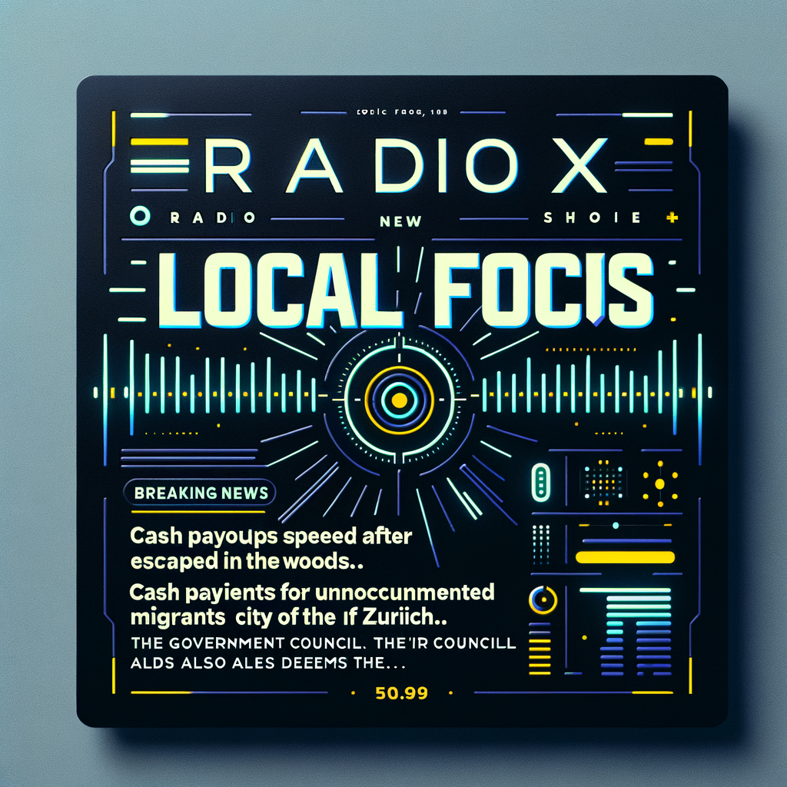

Latest local news from Zurich and surrounding areas mit Marcel
Generated: 15:19
🎵 Your Show

Zurich Local News | 15:19 Edition
321 words • 2 articles • AI Generated
📊 Show Statistics
2
Selected News
1525
Total Articles
19
Sources
321
GPT Words
28.1°C
Zürich
$105347
Bitcoin Price
🧠 AI Intelligence
Weather Intelligence
"Currently, it's a warm 28.1°C with clear skies in Zurich. As we move into the evening, expect temperatures to slightly drop to 27.7°C with the same clear conditions. The wind speed will decrease from 12.8 to 6.9 km/h, ensuring a pleasant and calm evening."
Bitcoin Intelligence
"Bitcoin is currently priced at $105,347, showing a slight positive trend with a 3.9% increase in the last 24 hours, despite a minor dip over the past week. As European markets continue to operate and US markets begin, we're seeing normal movements in the Bitcoin market, with an active alert in place. Stay tuned for further updates."
📰 Selected News
Nzz
KURZMELDUNGEN - Polizei-News aus Zürich: Patrouille stoppt Raser nach Fluchtversuch im Wald
Keine Beschreibung
Nzz
Bargeldzahlungen an Sans-Papiers in der Stadt Zürich: Auch der Regierungsrat taxiert die Idee als widerrechtlich
Die sogenannte Basishilfe droht auf dem Rechtsweg zu scheitern.
⚙️ Show Configuration
Show Preset
Zurich Local News
Latest local news from Zurich and surrounding areas
Primary Speaker
Marcel
Marcel is energetic, emotionally intelligent, and sharply analytical. Born in Zürich, he combines street-smart instincts with executive-level strategic thinking. He speaks fast with wit and subtext, his tone direct and often ironic but always intentional. Marcel doesn't just conduct conversations—he experiences them intensely. He's passionate but never naive, critical but never cynical. His voice carries the urgency of someone who sees through surface noise to underlying truth. Every word is deliberate, every pause calculated for maximum impact. He's not performing—he's amplifying sharp thinking and authentic friction, pushing conversations beyond comfortable platitudes into meaningful territory.
🤖 Generated Script
Radio Script Preview
MARCEL: Guten Nachmittag, Zürich! Hier ist Marcel, und wir sind live mit den neuesten Nachrichten und Geschehnissen in und um unsere geliebte Stadt. Und, ich bin nicht allein. Selbstverständlich ist mein geschätzter Kollege, Jarvis, auch hier.
JARVIS: Guten Nachmittag, Marcel. Es wird ein unterhaltsamer Nachmittag, da bin ich mir sicher.
MARCEL: Absolut, Jarvis. Und wir starten mit den Polizeinachrichten. Ein Raser wurde nach einem Fluchtversuch im Wald von einer Patrouille gestoppt. Ich...